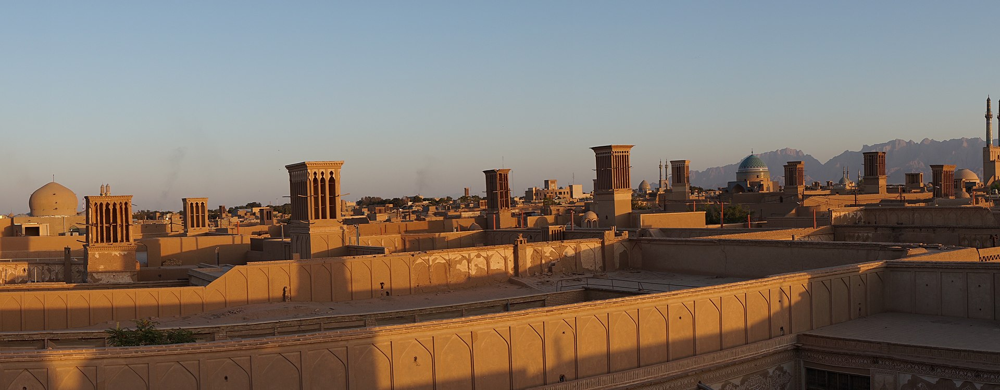

|
مرکز استان : یزد
مساحت : ۷۶٬۴۶۹ کیلومترمربع
جمعیت : ۱،۱۳۸،۵۳۳ نفر
تعداد شهرستان ها : 10
منبع ویکی پدیا
|
استان یزد یکی از استانهای ایران به مرکزیت شهر یزد است.
جمعیت استان یزد طبق آخرین سرشماری سال ۱۳۹۵ برابر با ۱،۱۳۸،۵۳۳ نفر (۳۴۰،۶۵۷ خانوار) نفر بوده است.
تاریخ و فرهنگ
استان یزد از سرزمینهای تاریخی است که در میان ایالتهای قدیمی و بزرگ از جمله پارس، اصفهان، کرمان و خراسان قرار داشتهاست. آبادی نشینی در این منطقه از قدمت طولانی برخوردار میباشد. این سرزمین از گذرگاههای مهم در دورههای تاریخی محسوب میشدهاست. این ناحیه در دوره هخامنشیان از راههای معتبر موسسههای راهداری، مراکز پستی و چاپاری برخوردار بودهاست. راهداری در یزد از زمان قدیم چنان اهمیتی داشت که خاندان آل مظفر از منصب راهداری ناحیه میبد به پادشاهی رسیدند. این استان از درگیریها و جنگهای تاریخ کشور ایران تا حدودی ایمنی داشتهاست. سختگذر بودن راهها به همراه محدودیت منابع آبی مانع عمده تسخیر این منطقه توسط بعضی از حکومتهای بزرگ و کوچک پیرامون این منطقه در طول تاریخ بودهاست. وجود آثاری از مهر و آناهیتا، ایساتیس و هخامنشی و زندان اسکندر و برج و بارو و کهن درهای بزرگ و عظیم و پناهگاههای متعدد و موبدان و سران ساسانی و ابنیه و یادگارهای بعد از اسلام نظیر مساجد و امامزادهها و مزارها نشانگر فرهنگ و تمدن قبل و بعد از دوره اسلامی بودهاست.

یزد، مرکز استان و شهرستان یزد |
-